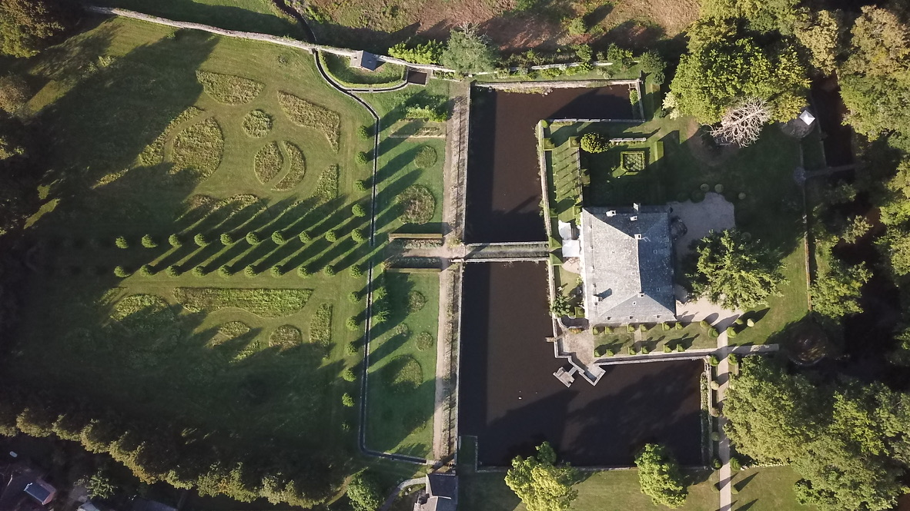

Le domaine
Histoire du Château
Le Château du Saillant, construit au XIIIe siècle, fut remanié aux XVe, XVIIe, XIXe et XXe siècles. Du château primitif subsiste un bâtiment rectangulaire assez massif, avec des mâchicoulis et des meurtrières — témoins de l'architecture militaire médiévale — ainsi que de nombreuses ouvertures intérieures et extérieures en ogives et des cheminées monumentales qui datent de l'origine du château.
Les sous-sols conservent des vestiges d'architecture militaire, et la toiture présente un style à la Mansart. Des traces d'anciennes tours et de leurs accès sont encore visibles depuis le château et au bord des douves et de la rivière qui fermait le quatrième côté des douves en U. La conservation des douves en eau vive, dont les cascades sont alimentées par la Vézère, est un des éléments remarquables qui caractérisent le château.
Au XIIIe siècle, les Comborn étaient seigneurs du Saillant. Au XIVe siècle, le domaine fut acquis par Guy de Lasteyrie, dont la lignée devint vicomtes de Comborn, marquis du Saillant et d'Objat, et grands sénéchaux du Bas et Haut Limousin.
Le château abrite des peintures murales du XVIe siècle dans le salon, et des vestiges des décors muraux à la chaux aérienne qui remontent au XIVe siècle et racontent en filigrane les vingt-trois générations qui se sont succédées dans le château.
Une vaste grange du XVIIe et une bergerie du XVIe siècle présentent des toitures en ardoises à coyaux, que l'on retrouve partout sur le domaine et qui sont typiques de l'architecture vernaculaire corrézienne. Cette cassure dans les pentes de la toiture écarte l'eau de pluie des façades et donne un charme certain à l'ensemble.
Ces éléments sont protégés au titre des Monuments Historiques (classements de 1979 et 1997) et entretenus et restaurés avec beaucoup de soin par leurs propriétaires, Paul et Marina de Lasteyrie du Saillant, avec l'aide d'artisans locaux.
Les maisons du village du Saillant bordent l'enceinte de la propriété et forment une sorte de muraille vivante, induisant un lien écotone entre le château et le village.
Un accès privé depuis le parc vers la chapelle rappelle que la chapelle était castrale à l'origine, bâtie en 1620 par le Marquis Jean de Lasteyrie du Saillant. Son descendant Guy de Lasteyrie du Saillant et sa femme Isabelle, parents de l'actuel propriétaire, avaient convaincu l'artiste Marc Chagall de créer les vitraux de la chapelle du Saillant. Aujourd'hui un projet de restauration de la chapelle est à l'étude afin de parer aux désordres structuraux existants et d'offrir aux vitraux de Chagall un cadre digne de leur valeur artistique et spirituelle. À la demande de Marina de Lasteyrie du Saillant, le designer breton Ronan Bouroullec, qui a fait un travail exceptionnel à l'intérieur de la chapelle Saint-Michel de Brasparts aux Monts d'Arrée, a accepté la mission de repenser tout l'intérieur de la chapelle du Saillant, dont son mobilier liturgique. Les travaux archéologiques préalables démarreront en septembre 2026.
Dans le même esprit, les actuels propriétaires ont débuté un projet de parc artistique et botanique sur le thème « arbre, eau, pierre ». Un lien amical avec l'éminent botaniste japonais Mikinori Ogisu a été le point de départ du projet, avec sa proposition d'implanter au Saillant une partie de sa collection botanique personnelle.
Sur le plan artistique, la première œuvre du parc, installée en juillet 2026, est une sculpture monumentale de quinze mètres de haut, « Idee di pietra – Acer montano » de Giuseppe Penone. Lors de sa visite au Saillant en août 2025, Maestro Penone a demandé que l'œuvre — un arbre en bronze avec une pierre entre ses branches — soit implantée dans les douves, l'inscrivant ainsi dans le fil rouge « arbre, eau, pierre » qui définit l'identité du site du Saillant.
En effet, le village est traversé par la Vézère et différents ruisseaux et rigoles qui alimentent les douves du château ; il s'ouvre vers les gorges arborées de la rivière en remontant vers sa source et le Saut du Saumon. Par ailleurs, son sol, partout rocailleux, rappelle que trois carrières de schiste, dont une à deux kilomètres du Saillant, sont encore exploitées et se retrouvent utilisées sur les murs et sur les toits. Ces trois éléments, issus de la nature, sont universels et signent ici un ADN particulier, à la fois attachant, austère et fort.
Le Château du Saillant accueille régulièrement des évènements artistiques et culturels, et son parc peut se visiter sur réservation.

